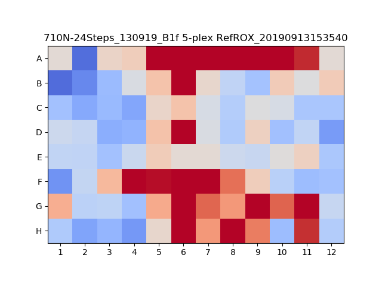

The probability of streaks is dependent on the probabilty that a given partition is negative (p0). This is similar to the successive coin flip problem, but there is a defined start and stop in each row. Streaks can start and stop anywhere in the row. To find the expected amount of streaks, I simulated 10000 trials of different p0 values (maybe not enough but close enough). The output of this simulation was a lookup table of the p0 value and the expected breakdown of different streak lengths.
The first method I tried used the output csv file of the partition data from the Constellation instrument. This way I could run the streak detection based on the measurements instead of trying to do an image processing method. The algorithm only used the postive partitions sorted by X coordinate. The first partition would be selected, then the partitions within some error bounds would be checked. Any partitions in the streak were removed from the partitions to check, and then the next partition would be selected. This worked well but was limited by the Constellation result processor and the slow iteration in Python. The Constellation result processor removes edge partitions, which is often where streaking issues occur. If I had more time I would try to develop this in C++ but in Python it would take 15s per image, or 24 minutes per plate.
The second method I tried looked at a blur of the image. The worst areas of the image would have brighter or dimmer areas of the blur. This worked decently at finding clumps partitions not sealing, but struggled with normal streaks.The ultimate method I chose was a pseudo combination of the two previous methods. I used the watershed segmentation for partition detection from the result processor to find the postive partitions. Then the threshold of image was dilated using a wide kernel to extend partitions to connect neighbors. The dilated image was then eroded to return the length of the partitions to normal. The lengths of the detected contours were summed to get the overall length of the image. The expected length could be found using the probabilities determined earlier, which would give a score for each image.
